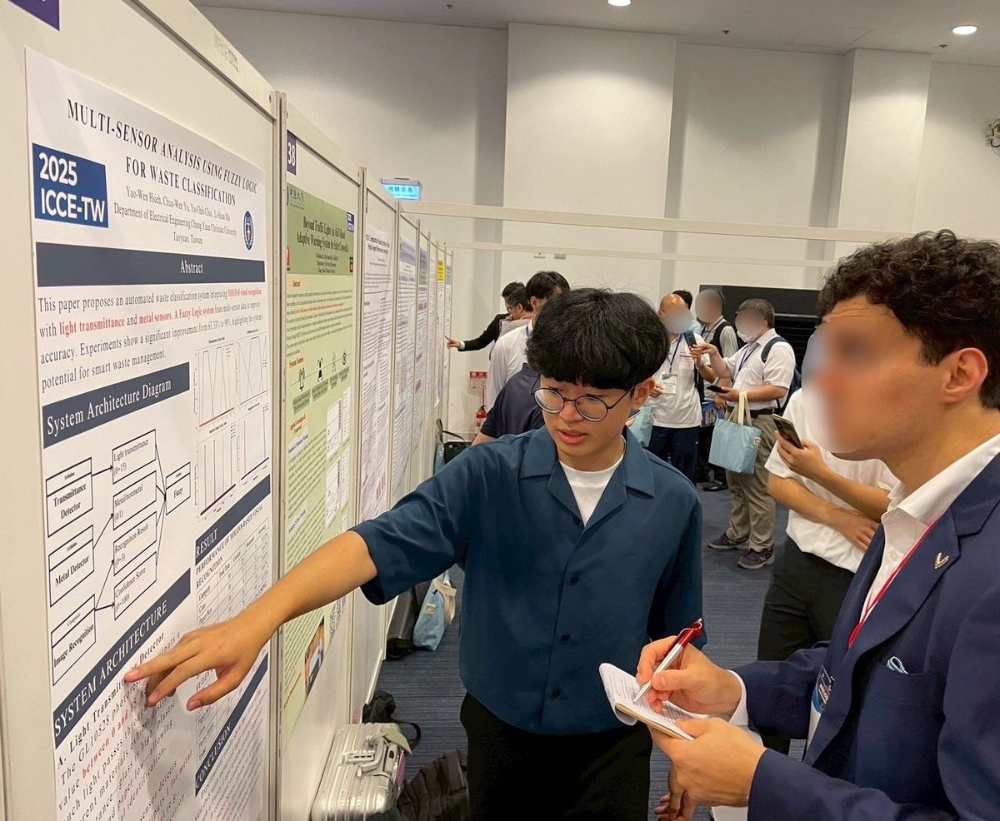
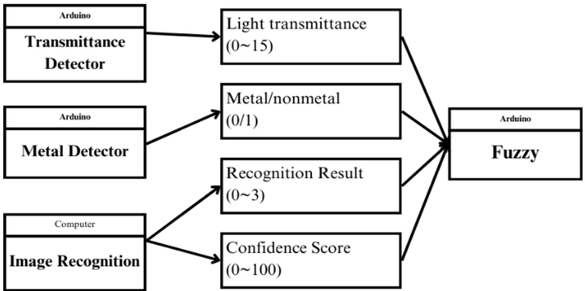
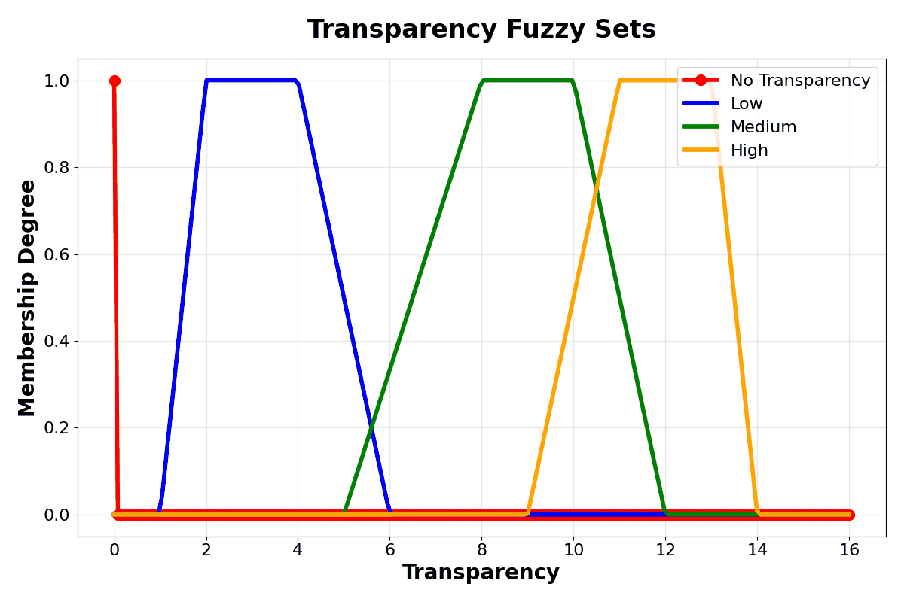
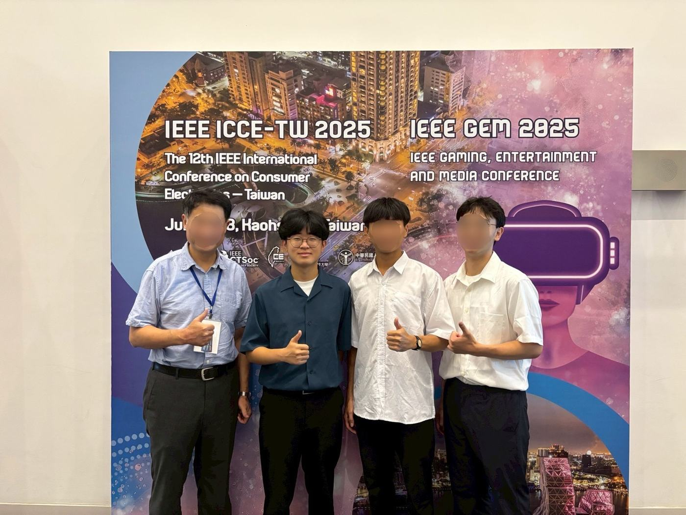

Multi-Sensor Waste Classification
My undergraduate capstone. We added a light-transmittance sensor and a metal sensor to a YOLOv8 camera classifier, then combined the four signals with fuzzy logic. On our 120-pass test, accuracy went from 63.33% with vision alone to 90%.
- Role
- Project lead · First author & presenter
- Team
- 3 students, 1 faculty advisor
- Context
- CYCU capstone · IEEE ICCE-Taiwan 2025
- Methods
- YOLOv8, Arduino sensing, fuzzy logic
- Result
- 63.33% → 90% over 120 test passes

Problem
A camera sees shape, color, and texture. It does not see what an object is made of. A clear plastic bottle can look like a glass bottle, and a printed paper box can look like a can. On our test set, the vision model alone classified 63.33% of passes correctly, and only 8 of 30 glass bottles.
The capstone asked a simple question: can low-cost, non-visual sensors make a vision-only classifier more reliable? We used waste sorting as the test case. The four classes (aluminum cans, paper boxes, glass bottles, plastic bottles) are easy to demonstrate, and anyone can follow the result.
My role and contributions
I led a team of three students working with a faculty advisor. My role was close to a project manager and system designer: I decided how the parts fit together and kept the work moving. Each of us also owned one technical module.
What I led
- Designed the overall system architecture: which inputs to use, what each module outputs, and how they connect.
- Proposed fuzzy logic as the way to combine the vision and sensor inputs.
- Coordinated the team’s work and reported progress to our advisor.
- Wrote the paper. First author and presenter at IEEE ICCE-Taiwan 2025.
What I built
- The light-transmittance sensor: a GL10528 photoresistor on Arduino, with ambient-light calibration and processing down to one 0–15 value per object.
- The integration of the three modules into one pipeline, from the laptop-side vision output to the Arduino-side sensors and fuzzy controller.
- The YOLOv8 vision module, together with one teammate: photographing objects, labeling images in Roboflow, and training the model.
Team
Coordinated a three-person team: a teammate implemented the 20+-rule fuzzy controller from my proposed approach, and another built the metal sensor, while I integrated all modules into one system.
System
Three modules each describe the object in a different way. Their four outputs go to one fuzzy controller on Arduino, which returns the final class.

| Module | Hardware and method | Output |
|---|---|---|
| Vision | Laptop camera; YOLOv8 trained on our own photographed and Roboflow-labeled images | Class label 0–3, confidence 0–100 |
| Light transmittance | GL10528 photoresistor on Arduino Uno, facing a light source 30 cm away | One value per object, 0–15 |
| Metal | LJ30A3-15-Z/BX inductive proximity sensor; voltage divider to bring its output to Arduino level | Metal 1, non-metal 0 |
| Fusion | Fuzzy inference on Arduino with 20+ hand-written rules | Final class |

How the light reading works
At startup the Arduino measures ambient light with the beam clear and uses it as the baseline. Each reading is scaled against that baseline to a 0–15 range.
While nothing blocks the beam, readings are marked as empty. When an object passes through, the readings between two empty markers are averaged into one transmittance value for that object.
The fuzzy sets on the left map that value to No, Low, Medium, or High transmittance. Their ranges were based on box plots of our measured readings for each material.
Validation
We tested 30 passes per class, 120 in total. The test objects were new items that did not appear in the YOLOv8 training images: about five or six items per class, each passed through the setup five or six times. We recorded accuracy for vision alone and for the full fused system.
| Class | Vision only | Fused | Change |
|---|---|---|---|
| Aluminum cans | 25/30 · 83.33% | 30/30 · 100% | +16.67 pts |
| Paper boxes | 17/30 · 56.67% | 30/30 · 100% | +43.33 pts |
| Glass bottles | 8/30 · 26.67% | 24/30 · 80% | +53.33 pts |
| Plastic bottles | 26/30 · 86.67% | 24/30 · 80% | −6.67 pts |
| Total | 76/120 · 63.33% | 108/120 · 90% | +26.67 pts |
The metal sensor fixed the mix-ups between cans and paper boxes. The transmittance reading fixed many of the mix-ups between glass and plastic, since the metal sensor reads 0 for both. Plastic bottles got slightly worse; the reason is explained below.
After training, the YOLOv8 model reported 85% mAP. That is a detection metric from training, measured on different images, so it is not comparable to the test accuracies above.
Outcome and limitations
I presented the work as first author at IEEE ICCE-Taiwan 2025. The project also received the Excellence Prize in the 2025 CYCU Capstone Project Competition.

Plastic got worse
Plastic fell from 86.67% to 80%. A single photoresistor measures the light that reaches one point, not true transmittance. Clear glass refracts the beam away from that point, so it reads low. PET scatters light onto it, so it reads higher. The two ranges overlapped, and the fused result sometimes overrode a correct vision answer.
Few test items
The 120 passes came from about five or six items per class, each repeated. That shows the method works on those items. It does not show how it handles the wider variety of real waste.
Tuned in our lab
The fuzzy rules were written by hand from our own measurements. The light reading depends on a fixed 30 cm light path and a startup calibration, and was only tested in our lab.
What the 90% does not establish
It is a capstone-scale result on 120 passes under lab conditions. It is not evidence of production-level accuracy or of performance on unseen material types.